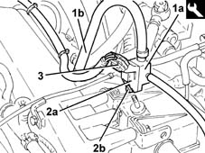

1064BA Check turbo pressure control solenoid (Pierburg) efficiency
- Path
- Test > 10 ENGINE > 1064 ENGINE TURBOCHARGING SYSTEM > 1064B control/safety devices > 1064BA Check turbo pressure control solenoid (Pierburg) efficiency
- Kind
- test / check procedure
- Applies to
- engines: 1.9 JTD 8v , 1.9 JTD 16v, 2.4 JTD 10v; all production periods
- Interactive page
- https://sloeber94.github.io/elrnDB-a156/en/#/3239161
Applies to: engines: 1.9 JTD 8v , 2.4 JTD 10v; all production periods; only with equipment: Euro 3
Proceed with the removal 1016A10 sound-proofing cover - r + r .
Proceed with the removal 1060G16 pressure relief sensor - r r .
Connect the tool (1a) with the connecting pipe (1b) to the intake chamber in the housing for the excess pressure sensor.
 | Name | Country |
|---|---|---|
1a | Connector | 1.870.752.000 |
Fit the excess pressure sensor (2a) on the tool and secure it using the bolt (2b).
Connect the electrical connection to the excess pressure sensor.

Connect the pressure transducer to the tool.
Position the Examiner/SDC diagnostic instrument in the interior compartment and make the connections.
Select the 'pressure gauge' instrument on the Examiner and set it to acquire data in 'inlet pressure' mode with full scale of 2000 mmHg and time selection 10 seconds.
Go out onto the road (observing the legal speed limits) and carry out the following test.
On a stretch of motorway, drive the car at 2500 rpm in 4th gear.
Start graphic acquisition by pressing 'start' on the diagnostic instrument, and after about 2 seconds press the accelerator pedal fully until 3500 rpm is reached.
After reaching this speed, release the accelerator pedal fully.
Display the resulting graph and in the pressure constant part (*), excluding the initial peak, the reading should be 1900-2080 mbar (1444-1581 mmHg) corresponding to a turbocharging value of 900-1080 mbar.
On a fast non-urban journey, drive the car at 2500 rpm in 3rd gear.
Start graphic acquisition by pressing 'start' on the diagnostic instrument, and after about 2 seconds press the accelerator pedal fully until 3500 rpm is reached.
After reaching this speed, release the accelerator pedal fully.
Display the resulting graph and in the pressure constant part (*), excluding the initial peak, the reading should be 1900-2080 mbar (1444-1581 mmHg) corresponding to a turbocharging value of 900-1080 mbar.
Disconnect the Examiner/SDC and the pressure transducer.
Disconnect the electrical connection from the excess pressure sensor.
Undo the bolt and remove the excess pressure sensor from the tool.
Remove the tool for checking the supercharging pressure.
Proceed with the refitting 1060G16 pressure relief sensor - r r .
Proceed with the refitting 1016A10 sound-proofing cover - r + r .
Applies to: engines: 1.9 JTD 16v; all production periods
Fit the connector 1.870.752.000 placing it between the turbocharging sensor and intake chamber.
Connect the pressure transducer to the tool.
Place the diagnostic instrument in the interior compartment and connect it.
Select the 'pressure gauge' instrument on the diagnostic instrument, and set it to acquire data in 'inlet pressure' mode with full scale of 2000 mmHg and time selection 10 seconds.
Go out onto the road (observing the legal speed limits) and carry out the following test.
On a stretch of motorway, drive the car at 2500 rpm in 4th gear.
Start graphic acquisition by pressing 'start' on the diagnostic instrument, and after about 2 seconds press the accelerator pedal fully until 3500 rpm is reached.
After reaching this speed, release the accelerator pedal fully.
Display the resulting graph and in the pressure constant part, excluding the initial peak, the reading should be [DF_1900] - 2080 mbar (1444-1581 mmHg) corresponding to a turbocharging value of 900-1080 mbar.
On a fast non-urban journey, drive the car at 2500 rpm in 3rd gear.
Start graphic acquisition by pressing 'start' on the diagnostic instrument, and after about 2 seconds press the accelerator pedal fully until 3500 rpm is reached.
After reaching this speed, release the accelerator pedal fully.
Display the resulting graph and in the pressure constant part, excluding the initial peak, the reading should be [DF _1900] - 2080 mbar (1444-1581 mmHg) corresponding to a turbocharging value of 900-1080 mbar.